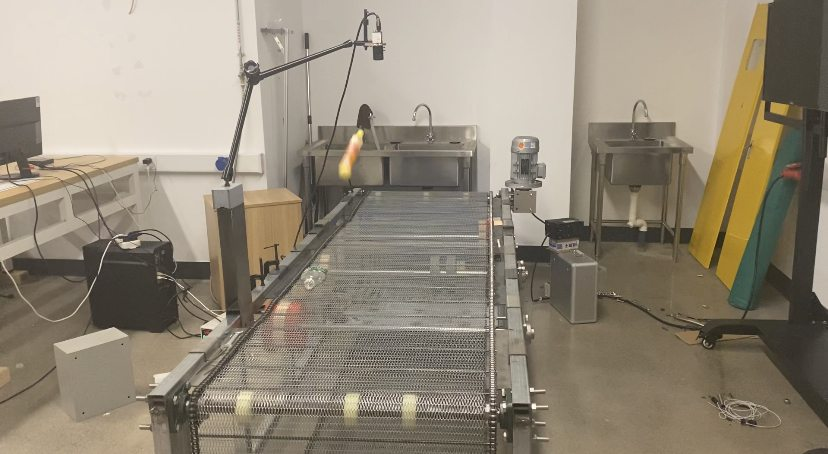
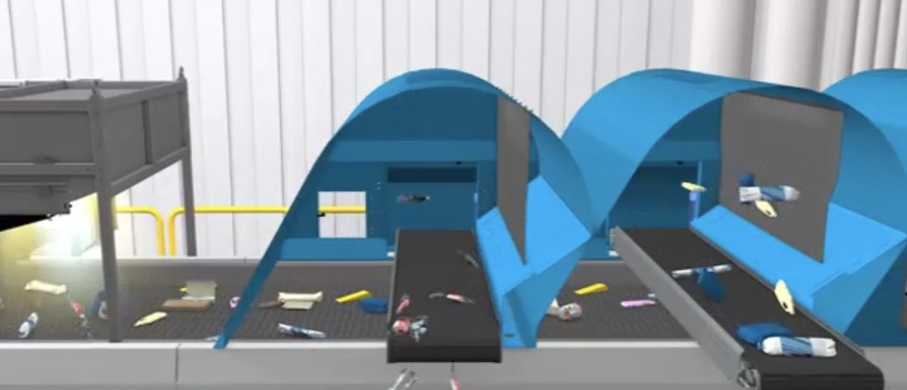

基于机器学习的智能垃圾分拣系统Machine-learning Smart Waste-sorting System
作为负责人主导一套面向轻质包装废弃物的智能分拣系统：用 YOLOv5 视觉模型识别塑料瓶，配合电磁阀喷气的气压式穿孔传送带实现自动分拣，目标"单视觉传感器分拣六种材料"。As project lead, I built a smart sorting system for light packaging waste: a YOLOv5 vision model recognizes plastic bottles, and a perforated pneumatic conveyor with solenoid air-jets sorts them automatically—targeting six materials with a single vision sensor.
项目背景Background
现有垃圾分类系统多采用机械手，价格昂贵、效率低，且缺乏针对塑料垃圾的专门方案。本项目提出用电磁阀喷气控制塑料瓶筛选的新型方式，结合机器学习视觉识别，提升轻质可回收物的分拣效率与二次原料质量。Existing sorting systems mostly use robotic arms—expensive, slow, and lacking solutions tailored to plastic waste. This project proposes a new approach: solenoid air-jets to sort plastic bottles, combined with machine-vision recognition, improving sorting efficiency and recyclate quality for light recyclables.
我的具体工作（作为负责人）What I Did (as lead)
- 项目统筹：负责整体推进、跨学科分工与协作（视觉算法 + 机械 + 气动）。Coordination: drove the project and the cross-disciplinary split of work (vision + mechanics + pneumatics).
- 数据集构建：负责塑料瓶图像数据集的拍摄与人工标注，覆盖不同光照、角度与瓶型，用于 YOLOv5 训练。Dataset: shot and hand-labeled a plastic-bottle image dataset across lighting, angles and bottle types for YOLOv5 training.
- 视觉硬件：设计并安装相机支架，搭建计算机视觉采集系统。Vision hardware: designed and installed the camera bracket and built the vision-capture setup.
- 模型与机械：参与 YOLOv5 训练，以及气压式穿孔传送带（含电磁阀喷气）的搭建与问题处理。Model & mechanics: took part in YOLOv5 training and in building/debugging the perforated pneumatic conveyor with solenoid air-jets.
成果与亮点Results & Highlights
- 提出并验证"电磁阀喷气分拣塑料瓶"的新型分拣方式（区别于昂贵的机械手方案）。Proposed and validated air-jet sorting of plastic bottles (an alternative to costly robotic arms).
- 构建了从数据采集 → 标注 → 模型训练 → 实物传送带测试的完整原型链路。Built the full prototype pipeline: data collection → labeling → model training → physical conveyor testing.
- 设计目标：仅用一个视觉传感器即可分拣多达六种不同材料的轻质垃圾。Design goal: sort up to six light-waste materials with a single vision sensor.
项目图片Gallery


点击图片可查看大图。Click an image to view full size.